Wprowadzenie
Witamy w instrukcji obsługi naszej aplikacji - Stacja Narciarska.
Nasza aplikacja została zaprojektowana, aby ułatwić korzystanie z usług stacji narciarskiej zarówno narciarzom, jak i pracownikom.
W niniejszej instrukcji znajdziesz szczegółowe informacje dotyczące logowania, rejestracji, zakupu biletów oraz zarządzania różnymi funkcjami aplikacji.
Mamy nadzieję, że ta instrukcja pomoże Ci w pełni wykorzystać wszystkie możliwości oferowane przez naszą aplikację.
Logowanie i Rejestracja
Główny ekran logowania, wyświelany po włączeniu aplikacji:
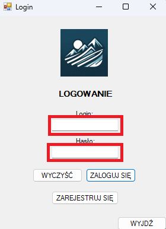W zaznaczonych miejscach wpisujemy kolejno: login i hasło przypisane podczas rejestracji. Następnie zatwierdzamy operację logowania przyciskiem "ZALOGUJ SIĘ". Po poprawnym zalogowaniu się, system przeniesie użytkownika do ekranu odpowiadającemu jego roli w systemie.
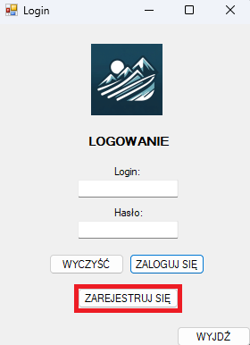Jeżeli nie posiadasz konta w naszym systemie, możesz za pomocą przycisku "ZAREJESTRUJ SIĘ" przenieść się do ekranu rejestracji konta.
Użytkownicy
User (narciarz)
1. Widok wyświelany użytkownikowi po pomyślnym zalogowaniu:
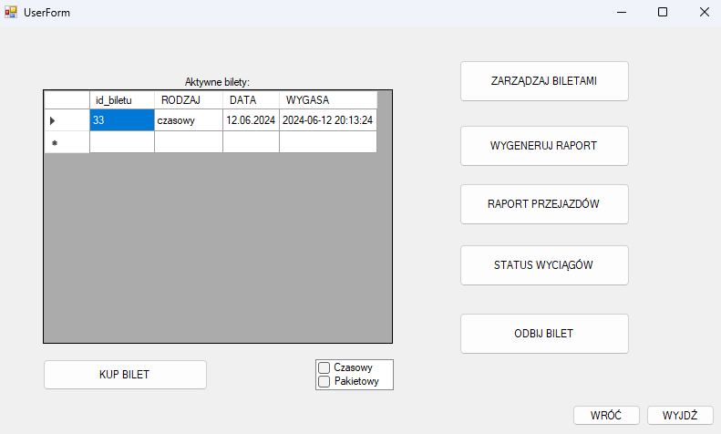Dla wyświetlonego wyżej okna zostały przygotowane tooltipy, które wyświetlają po najechaniu kursorem na wybrany przycisk lub inny obiekt.
2. Proces kupna biletu:
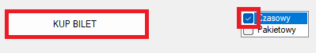W celu kupna biletu, należy zaznaczyć okienko z oczekiwanym rodzajem biletu (czasowy lub pakietowy), następnie zatwierdzić operację przyciskiem "KUP BILET".
Użytkownik zostanie przeniesiony do kolejnego okna, w którym będzie miał do wyboru: odpowiedni czas (bilet czasowy) lub konkretną liczbę przejazdów (bilet pakietowy). Wybór zatwierdzamy przyciskiem "Zatwierdź".
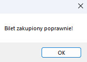W przypadku poprawnego zakupu, wyświetlony zostanie odpowiedni komunikat potwierdzający. Nieudana próba kupna biletu, zostanie również odpowiednio zakomunikowana (wyświetli się okienko z odpowiednim błędem).
3. Aktywne bilety dla zalogowanego użytkownika wyświetlają się w tabeli, w głównym oknie:
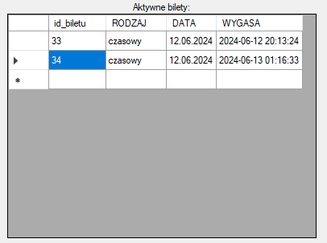 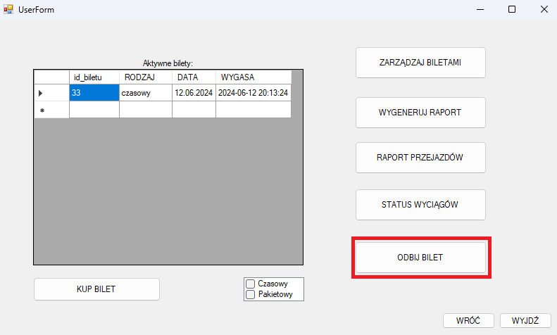 4. Zalogowany użytkownik może, przy użyciu naszego systemu odbić swój bilet. Przy użyciu przycisku "ODBIJ BILET", użytkownik przenoszony jest do odpowiedniego interfejsu. 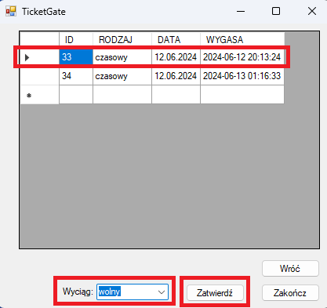 Należy wybrać bilet do skasowania, następnie wybieramy interesujący nas wyciąg i zatwierdzamy operację przyciskiem "Zatwierdź". 5. Użytkownik ma również dostęp do funkcjonalności raportujących programu: 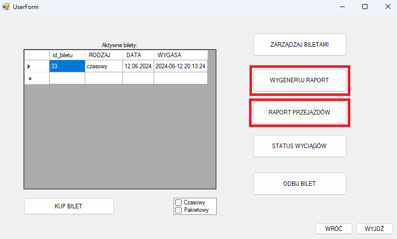 Przykładowy raport użytkownika: 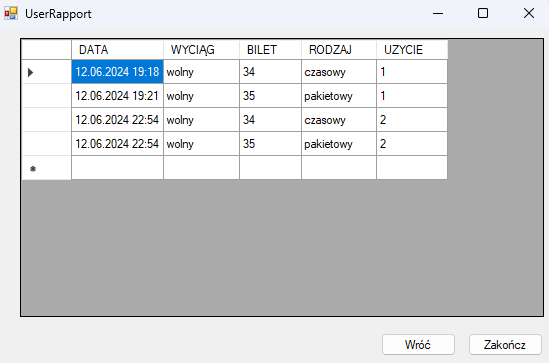 Przykładowy raport przejazdów (możliwość filtrowania po dacie): 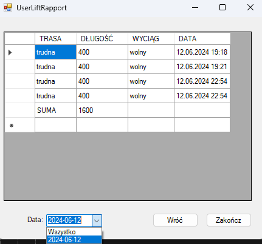 6. Udostępniona jest również użytkownikowi możliwość sprawdzenia statusu wyciągów, poprzez kliknięcie na przycisk "STATUS WYCIĄGÓW": 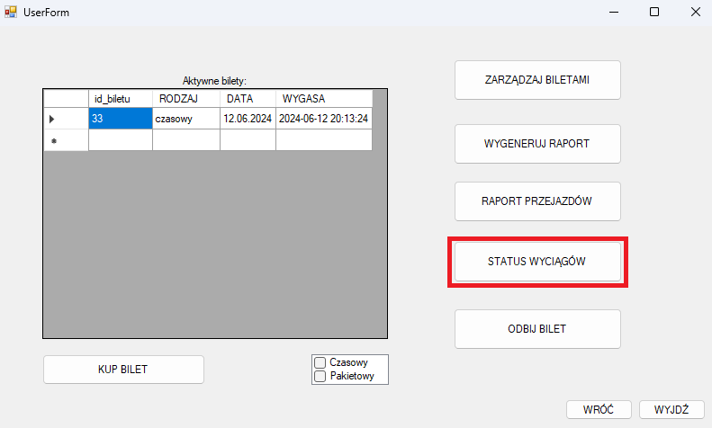 Użytkownik przenoszony jest do okna wyświetlającego tabelę z informacjami dotyczącymi wyciągów (limit miejsc, status wyciągu, godzina otwarcia i zamknięcia) 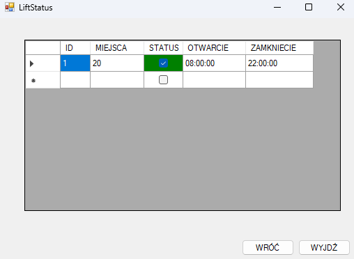Admin
Widok wyświetlany po poprawnym zalogowaniu się na konto administratora:
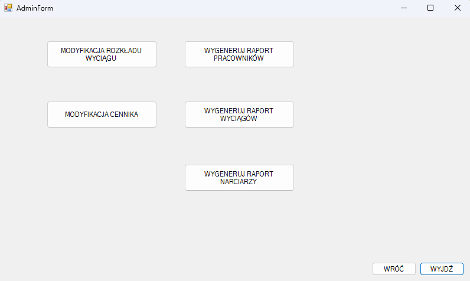Seller
Widok wyświetlany po poprawnym zalogowaniu się na konto sprzedawcy biletów:
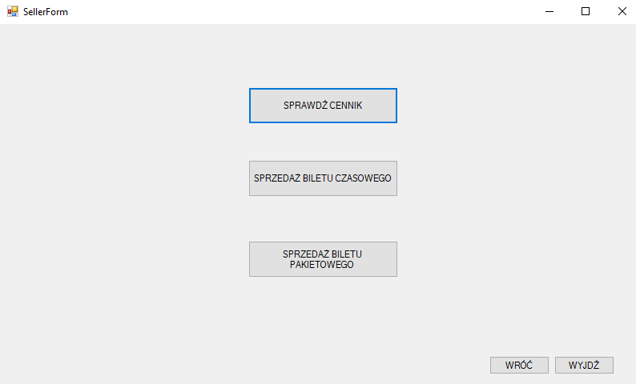Sprzedawca ma możliwość sprzedania dwóch rodzajów biletów
Czasowych:
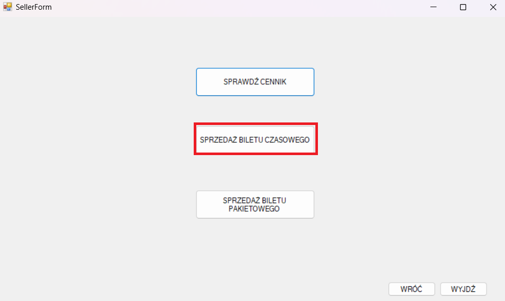Zaznaczenie okienka przy odpowiednim okresie czasowym i naciśnięcie przycisku "Zatwierdź" poskutkuje sprzedażą biletu
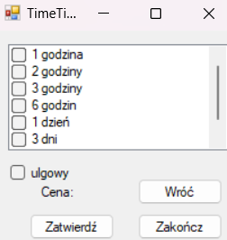Pakietowych:

Zaznaczenie okienka przy odpowiednim pakiecie przejazdów i naciśnięcie przycisku "Zatwierdź" poskutkuje sprzedażą biletu
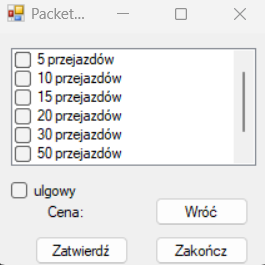Service
Widok wyświetlany po poprawnym zalogowaniu się na konto serwisanta:
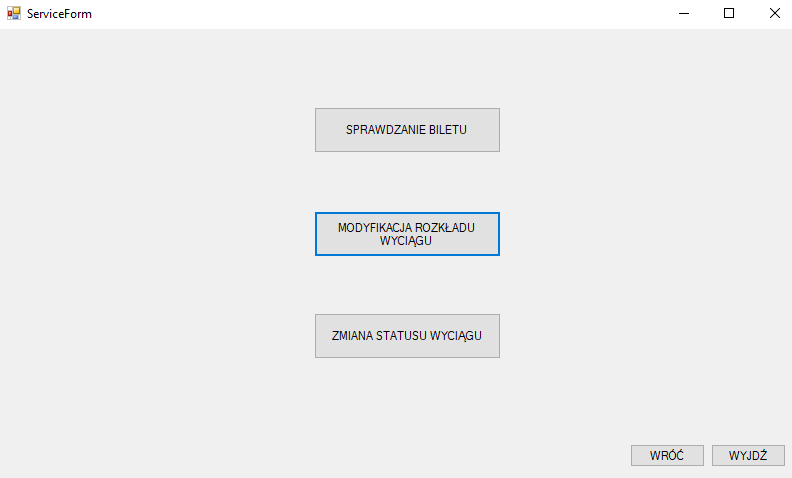Management
Widok wyświetlany po poprawnym zalogowaniu się na konto zarządu:
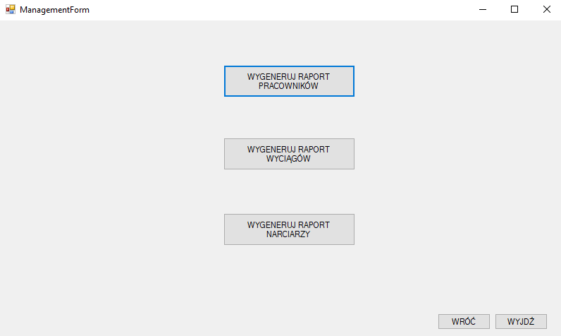Lifter
1. Widok wyświetlany po poprawnym zalogowaniu się na konto liftera:
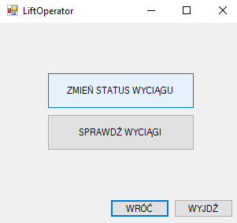2. Zmiana statusu wyciągu
Po naciśnięciu przucisku "ZMIEŃ STATUS WYCIĄGU" uruchamia się okno, dzięki któremu można zmienić status danego wyciągu
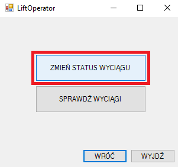 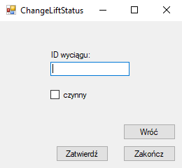W tym celu należy wpisać ID wyciągu, którego status ma się zmienić. Przy użyciu checkboxa należy ustawić nowy status
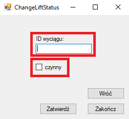Po wpisaniu ID i zaznaczeniu statusu należy nacisnąć przycisk "ZATWIERDŹ"
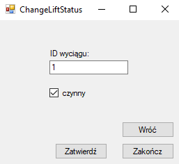 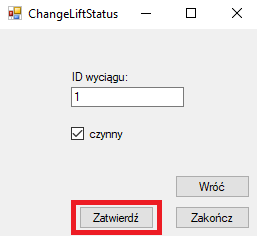Pomyślna zmiana statusu jest sygnalizowana komunikatem
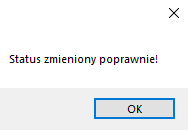3. Sprawdzanie statusu wyciągów
Po naciśnięciu przycisku "SPRAWDŹ WYCIĄGI" uruchamia się okno ze statusem wyciągów
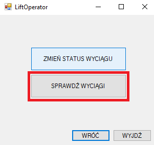Status aktywnego wyciągu jest zaznaczany na zielono
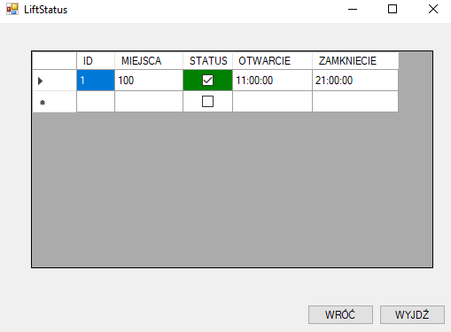Status nieaktywnego wyciągu jest zaznaczany na czerwono
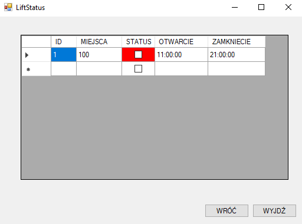4. Powrót do poprzedniego okna
Aby wrócić do poprzedniego okna należy nacisnąć przycisk "WRÓĆ" znajdujący się na dole każdego okna
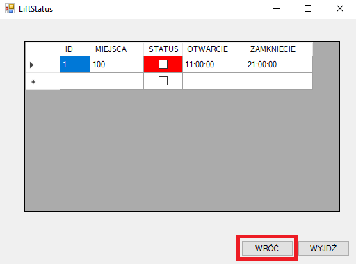